iPhone / iPad
iOS 版
你可以先进入主界面，再按需下载模型；模型就绪后，我们会提前完成轻量预热，帮你减少第一次提问的等待。
- 没有模型也能先浏览和准备
- 下载、校验和安装状态清晰可见
- 你可免费使用，也可选择打赏支持
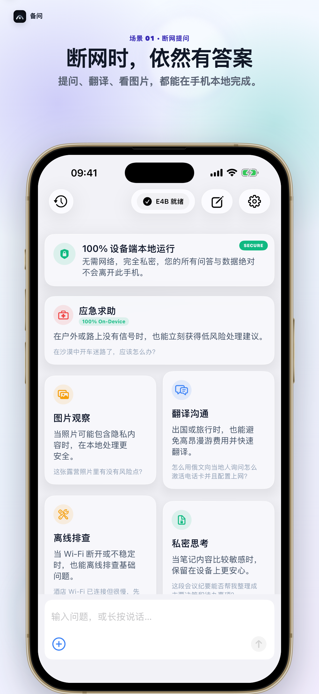
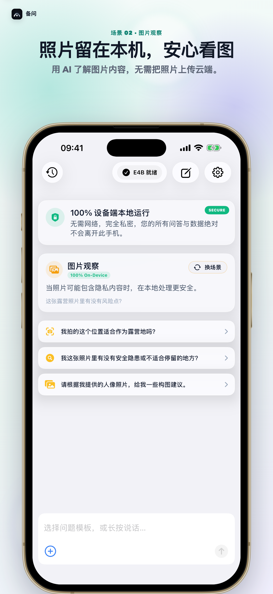
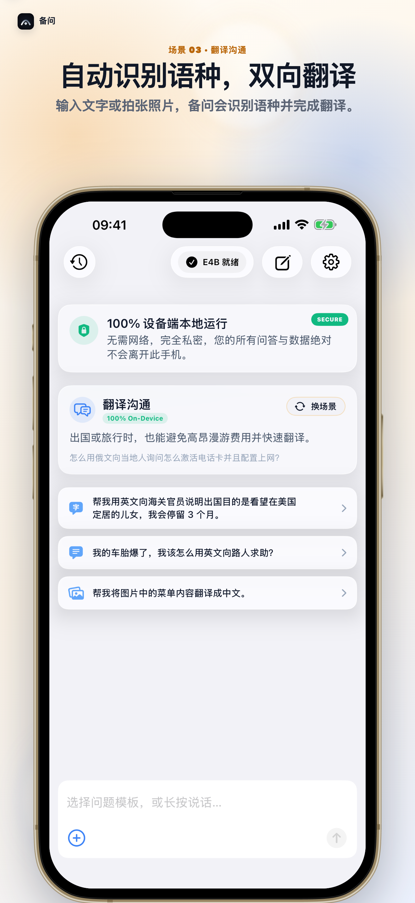
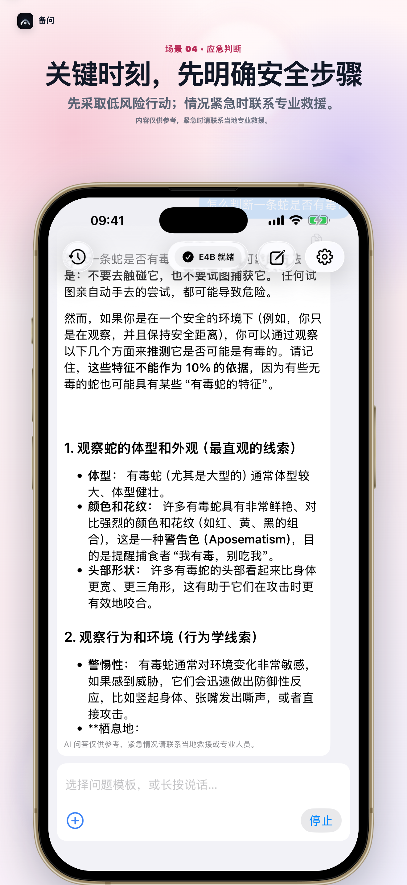
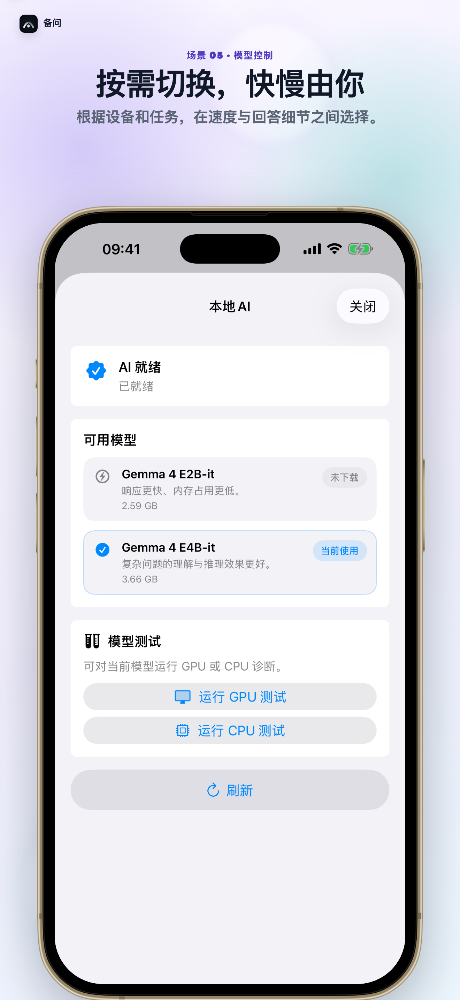
没网、信号弱，或想省流量时，你都可以先打开备问，再用本地模型问答、翻译或查看图片线索，及时获得一份可参考的信息。
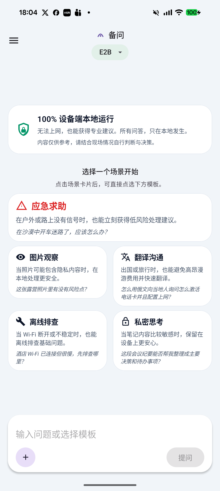
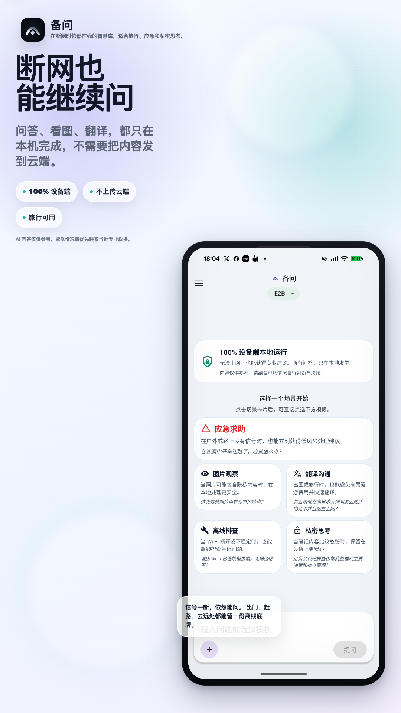
无论你用 iPhone 还是 Android，都可以先进入主界面，再按需下载模型。我们按平台特点安排体验：iPhone 会在模型就绪后进行轻量预热，帮你减少首次等待；Android 广告不会挡住输入、停止操作或风险提示。
你可以先进入主界面，再按需下载模型；模型就绪后，我们会提前完成轻量预热，帮你减少第一次提问的等待。





你可在 Android 15 或更新版本使用备问；广告不会打断输入，也不会遮住停止按钮和风险提示。
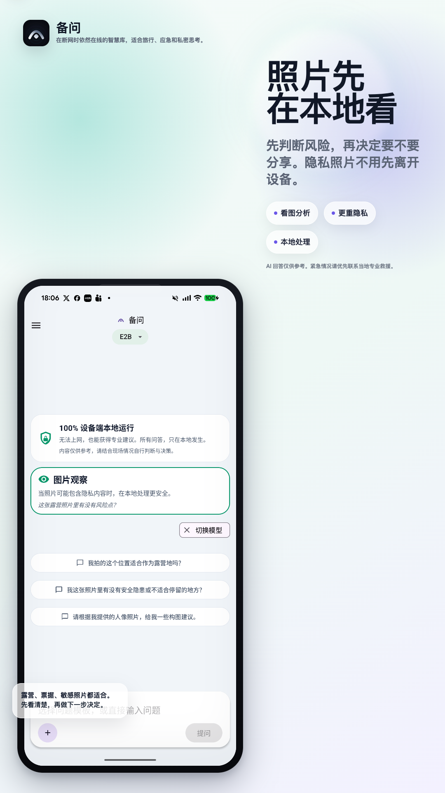
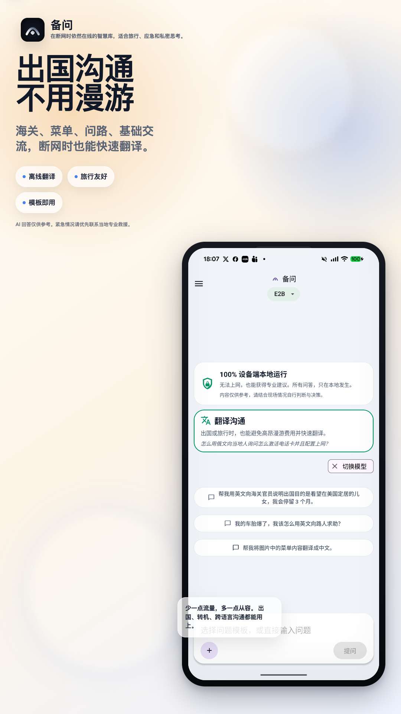
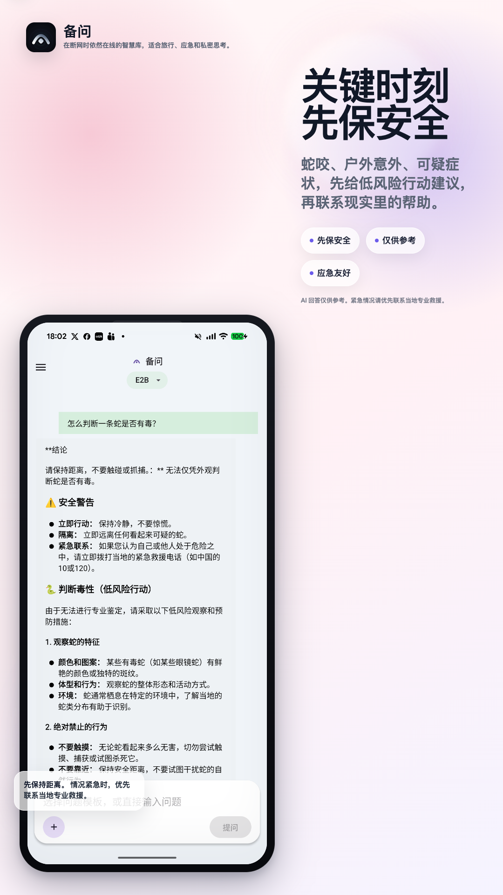
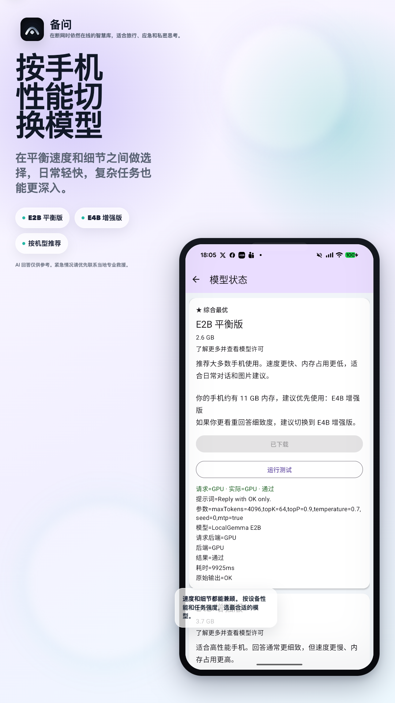
遇到弱网或突发情况时，你可以先打开、尽快开始提问；答案逐段出现，你能随时停止，再快速浏览重点。
还没下载模型？你可以先查看功能和下载状态，准备好后再决定是否下载。
你可以边看回答边判断是否继续；随时停止，并保留已经生成的内容。
看到不熟悉的帐篷、钓鱼点位、蘑菇或动物时，你可以先查看图片线索。我们只提供观察与参考，不代替专业判断。
需要问路、求助或说明身体不适时，你可以快速准备简短沟通文本，减少临场组织语言的压力。
看看你如何用问答、图片观察和翻译，先拿到随时可参考的信息。
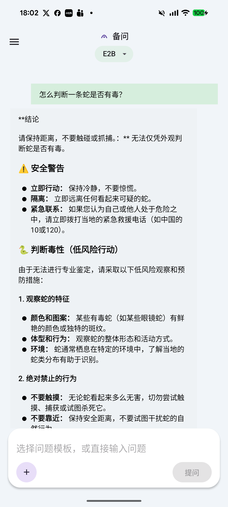